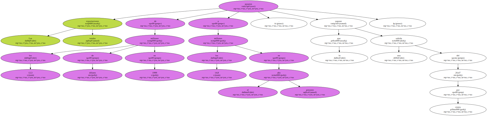
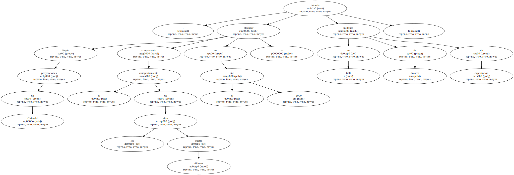

Las exportaciones de vinos chilenos registraron un aumento del 23,3 por ciento en abril pasado en comparación con el mismo mes de 1999 , hasta los 164,4 millones de dólares , informaron hoy fuentes del sector.
El volumen exportado ascendió a 74 millones de litros , un 22,17 por ciento más que el año pasado , cuando se vendieron al exterior 60.57 millones , según precisó un informe de la Asociación de Productores y Exportadores de Vinos Finos ( Chilevid ).
Las exportaciones totales pasaron de los 12,3 millones de dólares en 1999 a los 14,8 millones en el presente año , lo que supone una subida del 20,47 por ciento.
El precio medio por litro también experimentó un alza , desde 2,1 dólares a 2,2 dólares.
El aumento sostenido que ha experimentado la exportación vitivinícola durante los últimos cuatro meses fue valorado por los productores y exportadores como " un logro muy significativo ".

Asimismo destacaron la subida de las exportaciones a América del Norte , que suponen un 30 por ciento , en tanto que las destinadas a América del Sur representaron un 20 , con un importante alza de las exportaciones a Brasil , que aumentaron un 180 por ciento.
El informe agrega que Japón mantiene su ritmo de crecimiento , cercano al 50 por ciento , y que Europa presenta un nuevo incremento del 15 por ciento.
Según proyecciones de Chilevid , comparando el comportamiento de los últimos cuatro años en el año 2000 se debería alcanzar los 600 millones de dólares de exportación.
